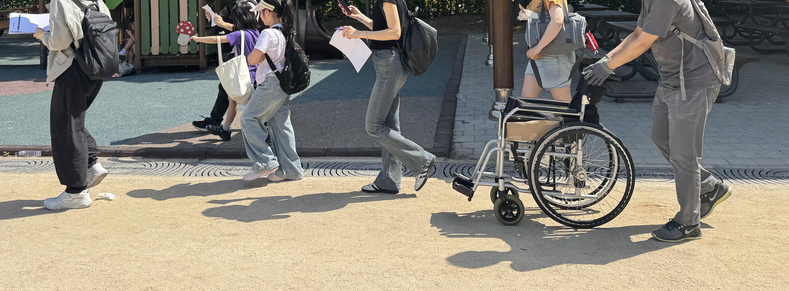

Civic Disaster Data Lab
재난 안전 공공데이터를 시민들과 함께 탐구하고 개선합니다.
사람이 중심인 재난 안전 정보를함께 만들어 갑니다.

안심이는 재난 안전 공공데이터를 시민들과 함께 탐구하고, 시민 관점에서 개선하여, 재난 상황에서 더 유용하고 포괄적인 재난 정보와 가이드를 구축하는 프로젝트입니다.
“재난을 연구하다보면 인간은 상황에 따라 다르게 발현되는 여러 가지 본성을 가지고 있음이 분명해지는데, 특히 두드러지는 본성은 회복력과 임기응변 능력, 관대함, 동정심, 용기 같은 것들이다.”
리베카 솔닛, 《이 폐허를 응시하라》 중에서
About
우리가 하는 일
데이터 탐구 및 분석
기존 재난 안전 공공데이터의 문제점을 발굴하고 시민들이 정말 필요로 하는 정보를 연구합니다.
시민 참여형 솔루션
시민 대상 조사와 워크샵을 통해 실제 사용자들의 목소리를 서비스 기획과 데이터 제안에 반영합니다.
전문가 협력 및 연대
재난·안전 전문가와의 간담회를 통해 정보의 정확성을 높이고 지속 가능한 안전망을 고민합니다.
Timeline
주요 활동 발자취
안심이 첫 시작
공공데이터캠프에서 시민에게 안전 정보를 제공하는 플랫폼으로 첫 제안되어, 병원·약국·심장충격기 위치 등 공공데이터를 시각화하는 프로젝트로 출발했습니다.
코드포코리아 프로젝트로 재단장
생존배낭 체크리스트, 대피소 검색, 시민 협력 아이디어와 주요 공지사항 연동을 논의하며 재난 정보 서비스의 기반을 다졌습니다.
재난안전 앱 UX진단
국내외 재난안전 서비스 사례를 비교하며 경보, 지도, 행동 안내가 시민의 다음 판단으로 이어지는지 살폈습니다.
밋앤핵과 풀씨 활동
재난가방 워크샵, 시민 인터뷰, 데이터 공유 플랫폼 미니밋을 통해 사람 중심의 재난안전정보가 어떤 데이터와 기능을 필요로 하는지 탐색했습니다.
대피소 탐방과 데이터 제안
대피소를 지도 위 위치가 아니라 실제로 이동하고 머무는 장소로 보고, 접근성·운영주체·결손정보를 데이터 항목으로 제안했습니다.
Projects
프로젝트
재난가방 워크샵과 프로토타입
준비물 목록을 넘어 가족 구성, 이동 상황, 돌봄 조건을 반영한 재난 준비 경험을 프로토타입으로 구체화했습니다.